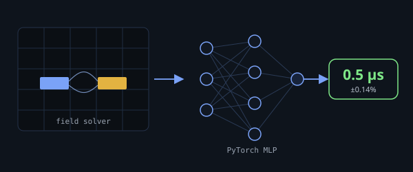
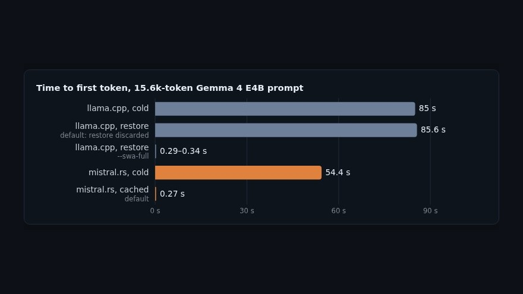
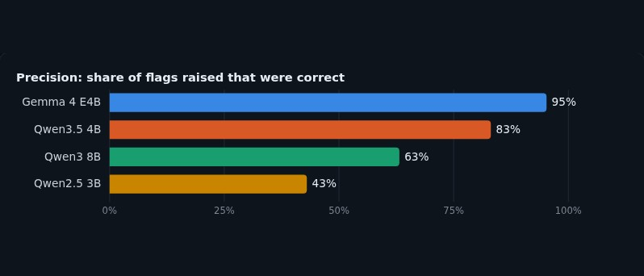

Master of Software Engineering (MSE-SS) student at Carnegie Mellon University, School of Computer Science; UC San Diego math, computer science, and linguistics grad — building web apps, LLM systems, and the hardware they run on outside of coursework.
Software, Systems & Hardware Projects
This is where I write up projects I build outside of coursework: software engineering first, with hardware and firmware experiments alongside.
Recently: a full-stack build on Next.js and Solana that won 1st place out of 168 teams at HackCMU, a KV cache reuse patch for the Rust inference engine mistral.rs, and an extraction benchmark of four local LLMs, the last two on an inference server I built from secondhand GPUs.
Larger projects
HKN Member Portal
UCSD HKN's member portal: a Django REST API and Svelte/Tailwind app for events, induction and outreach hours, deployed to AWS EC2 by GitHub Actions.
The X99 Build
One secondhand X99 board turned into a multi-GPU inference server: soldered PCIe lanes, a ReBAR BIOS mod, FP16 unlocked 55× on the mining cards, a Radeon VII on ROCm, a V100 passed through to a VFIO guest when it’s installed, and the whole box rebuilt from one Ansible playbook.
Project page, build log and docs →
Recently
- ML + C++ ML Surrogates for Interconnect Parasitics A C++17 finite-volume capacitance solver and a PyTorch surrogate that replaces a ~1.8 s field solve with a 0.5 µs prediction, within 0.5%
- full stack FoodTrace 1st of 168 teams at HackCMU: farm-to-shelf provenance on Solana with rotating HMAC QR codes
- firmware Arc B580: flash and dump Dumping and reflashing a dead Arc B580’s SPI firmware with flashrom
Software, Systems and ML

HKN Member Portal
Member portal for UCSD's HKN chapter with about 2,300 monthly users. A Django REST Framework API serves a Svelte and Tailwind single-page app for events, induction, outreach hours and interview scheduling, with email through Amazon SES and Google Sheets sync. Pushes to master deploy to AWS EC2 through GitHub Actions.

ML Surrogates for Interconnect Parasitics
A 2D finite-volume capacitance field solver in C++17 generates 4,292 labeled geometries, then a PyTorch MLP predicts line capacitance within 0.14% of the solver on held-out tests — replacing a ~1.8 s solve with a 0.5 µs prediction — and holds under 1% just outside the training range, where an XGBoost baseline drifts past 20%.

kvsnap: mistral.rs vs llama.cpp
Gemma 4 time to first token from 54 s to 0.27 s on my X99 inference server, with a 17-line KV cache snapshot patch to mistral.rs.

Four Small LLMs on One 8GB Card
Gemma 4 E4B and three Qwen models on schema-constrained extraction over 78 hand-labeled documents, run on the X99 server’s CMP 40HX. Gemma led at 95% precision.

AS Funding Chatbot
Retrieval augmented chatbot using Pinecone and LangGraph for retrieval and GPT-4 for generation, built for Senate funding and reporting questions.

Course Planner
LLM-powered course planning assistant for UCSD students, using Neo4j and FAISS for retrieval to help map out class schedules based on major requirements.

GPU-Accelerated Empirical ML Replication
Jupyter Notebook project comparing CuML (RAPIDS GPU-accelerated ML) against standard CPU implementations, run on A30 and V100 GPUs through UCSD's Datahub, with data compressed as tar.xz to fit storage quotas and results visualized across several notebooks.

HMM Word Classifier
Linguistics 168 (Computational Speech Processing) project using Hidden Markov Models to classify fruit names from audio pronunciation, using librosa for audio processing.
GPU Repair Chronicles
Intel Arc cards I’ve brought back or fixed up: SPI firmware dumps and reflashes, GSC firmware recovery, and a thermal pad swap. Photos from other repairs are from the bench.